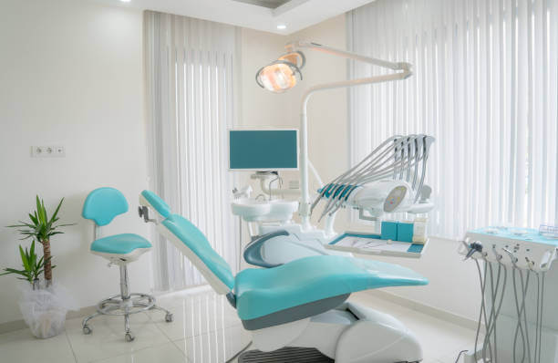
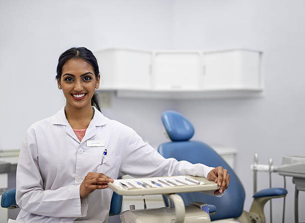

Zaina Dental was founded in 2017 by two dentists, Dr. Sven Makanzi and Dr. Emily Deo. Their passion for dentistry has been a key factor in the growth of the Zaina group of dental clinics over the past 3years and Zaina now provides compassionate dental care to patients across Canada. In addition to the Zaina Dental Brand. All of our providers take continuing education courses to stay current with advancing dentistry
OUR TEAM
About Us
At Zaina Dental, we are committed to providing a relaxed, professional setting to make your visit as comfortable as possible. Our staff are equipped with the latest technologies and training, and they are dedicated to treating their patients with outstanding service and comprehensive care. We understand that many people have fears and other concerns regarding dental work, and we do our best to alleviate these concerns by creating a compassionate environment for our patients. We also offer in-house specialists and convenient hours to match your schedule, making it easy for you to choose the Altima Dental location that works for you.
Our Doctors
Emily Doe
Dental Hygiene
Emily was born and raised in Ottawa. She started with us as a Dental Assistant back in 2013. She then went back to school to further her career in Dental Hygiene and is now a part of our hygiene team here at Chapman Mills Dental. Emily ensures her patients have an active role in their oral health and that they are comfortable during their appointment. In her spare time, Emily enjoys travelling and spending time with her family.

Natasha Rite
Oral and Maxillofacial Surgery
Dr. Natasha Rite Is a general dentist who graduated in 2010 with honours from The International University for Science and Technology in India as a Doctor of Dental Surgery. She immediately moved back to Canada to re-join her family. Where she started the dental equivalency process. In 2015 after she successfully passed with flying colours all the required examinations, she began to practice dentistry in Ottawa.